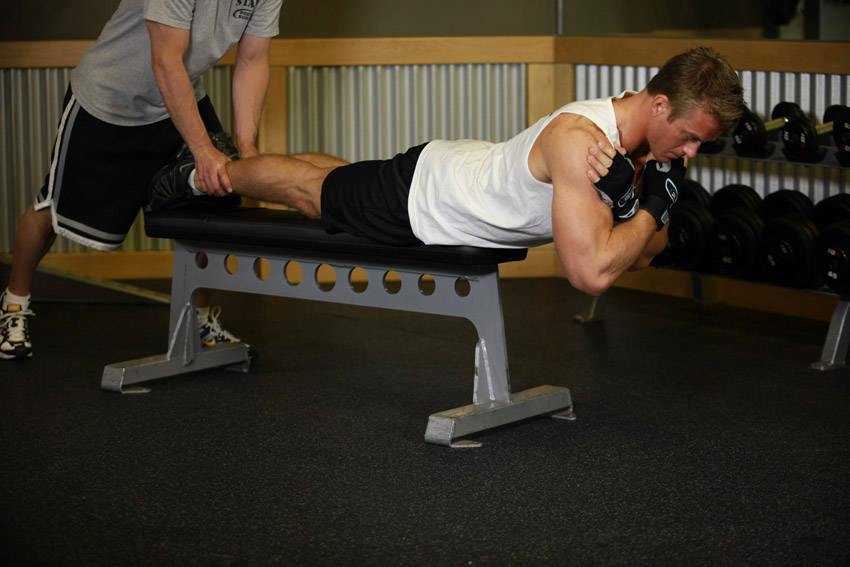

- With someone holding down your legs, slide yourself down to the edge a flat bench until your hips hang off the end of the bench. Tip: Your entire upper body should be hanging down towards the floor. Also, you will be in the same position as if you were on a hyperextension bench but the range of motion will be shorter due to the height of the flat bench vs. that of the hyperextension bench.
- With your body straight, cross your arms in front of you (my preference) or behind your head. This will be your starting position. Tip: You can also hold a weight plate for extra resistance in front of you under your crossed arms.
- Start bending forward slowly at the waist as far as you can while keeping your back flat. Inhale as you perform this movement. Keep moving forward until you almost touch the floor or you feel a nice stretch on the hamstrings (whichever comes first). Tip: Never round the back as you perform this exercise.
- Slowly raise your torso back to the initial position as you exhale. Tip: Avoid the temptation to arch your back past a straight line. Also, do not swing the torso at any time in order to protect the back from injury.
- Repeat for the recommended amount of repetitions.
This exercise appears in Programmd training programs. Take the quiz to find one for your gym.
Find your program